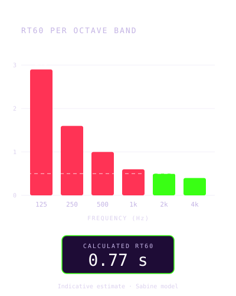
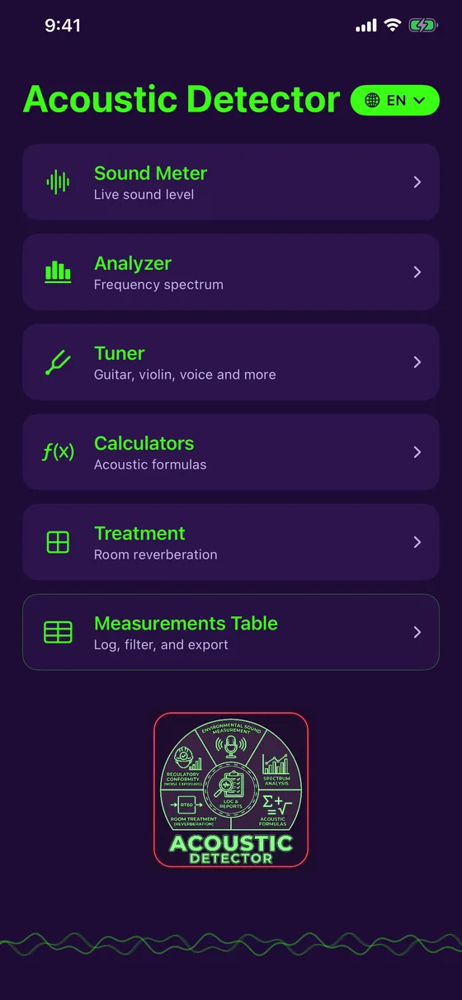

Sound measurement and acoustic treatment
Listen. Analyze. Correct.
Acoustic Detector turns your iPhone into an acoustics toolkit. Measure noise, analyze the spectrum, scan a room with LiDAR, then find out where it resonates and how much acoustic foam to add. Free, 100% offline, in English and French.

Version 1.2: room acoustics in detail
Reverberation time is no longer a single number: Acoustic Detector calculates it band by band, from bass to treble, to show where the room really has a problem.
- Reverberation by frequency: RT60 per octave band, from 125 Hz to 4 kHz, against your target
- Material absorption: the curve of every surface in the room
- Noise map: measure at several spots and get a heat map
- Double wall: resonance frequency and insulation by frequency
- The app is free: sound meter, analyzer, measurements table and PDF export included; Treatment and Calculators with a one-time purchase
Version 1.2 available on the App Store since October 3, 2026.
An indicative tool, honestly presented. The iPhone's microphone is not a certified instrument: values shown are estimates, clearly labeled as such, with optional manual calibration to sharpen accuracy. Acoustic Detector does not replace a calibrated instrument for official regulatory compliance.
What Acoustic Detector does
One device to measure and correct
Live sound meter
Real-time dB level with minimum, average and maximum, microphone calibration and a color-coded history.
Spectrum analyzer
Live frequency analysis with pure-tone detection: frequency, period and wavelength.
Room treatment
Reverberation time (RT60) against the target for your use case, and how much acoustic foam to add.
LiDAR scan
On iPhone Pro, sweep the room: dimensions and the area of every wall fill in by themselves.
Noise map
Measure the level at several spots and see the calm and noisy zones on a heat map.
Calculators
Sum of sound sources, sound pressure, frequency and wavelength, and a double-wall calculator.
Preview
Clean, precise, ready for the field



Who it's for
From the job site to the studio
Contractors and technicians
Measure a site's noise, check a partition, estimate a room's treatment before you quote.
Studios, musicians, audio
Calculate a room's reverberation, spot the problem bass frequencies, estimate the foam to add.
Home and office
Home theater, home office, meeting room: find where it resonates and what to do about it.
Price
Free, with one optional purchase
Free
- Live sound meter and calibration
- Spectrum analyzer
- Measurements table
- PDF export with charts
Complete
- Everything in Free
- Treatment: RT60, absorption, LiDAR scan, noise map
- Calculators: sources, pressure, waves, double wall
- No subscription
The price is shown by the App Store for your country. If you bought the app before it became free, everything stays unlocked automatically.
Ready to listen to your room?
Acoustic Detector is available on the App Store, for iPhone. Free, with one optional purchase.
Download on the App Store